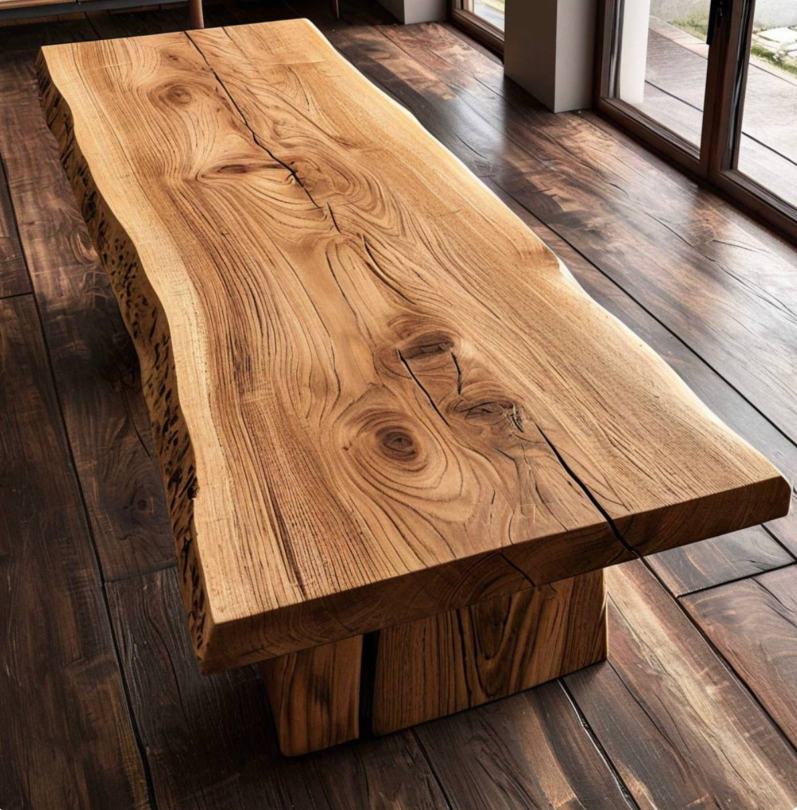

МЕБЕЛЬ ПО ВАШИМ РАЗМЕРАМВаш стол.
Ваш стол.
Из массива дерева.
Индивидуальные изделия из дерева для дома. Обсудим размеры, форму и отделку, подберём материал под ваш интерьер.
Обсудить мой проект
МАТЕРИАЛЫ И РЕШЕНИЯЖивой рисунок.
Живой рисунок.
Точная работа.
Обеденный стол, рабочая поверхность или подоконник. Фактуру дерева важно видеть вблизи, а форму изделия выбирать с учётом пространства.
Рассчитать мой проект